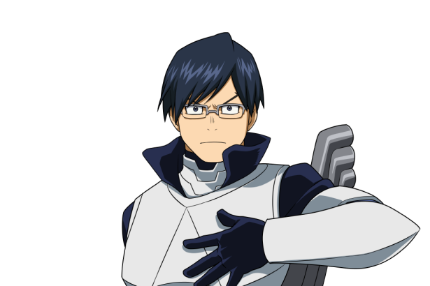

Tenya Iida
Nome de Herói: Ingenium
Individualidade: Engine – Possui motores nas panturrilhas que utilizam suco de laranja como combustível, garantindo-lhe uma velocidade de corrida absurda.
Perfil:
O representante de classe. É extremamente formal, disciplinado, segue as regras à risca e gesticula de forma robótica, mas tem um coração gigante.